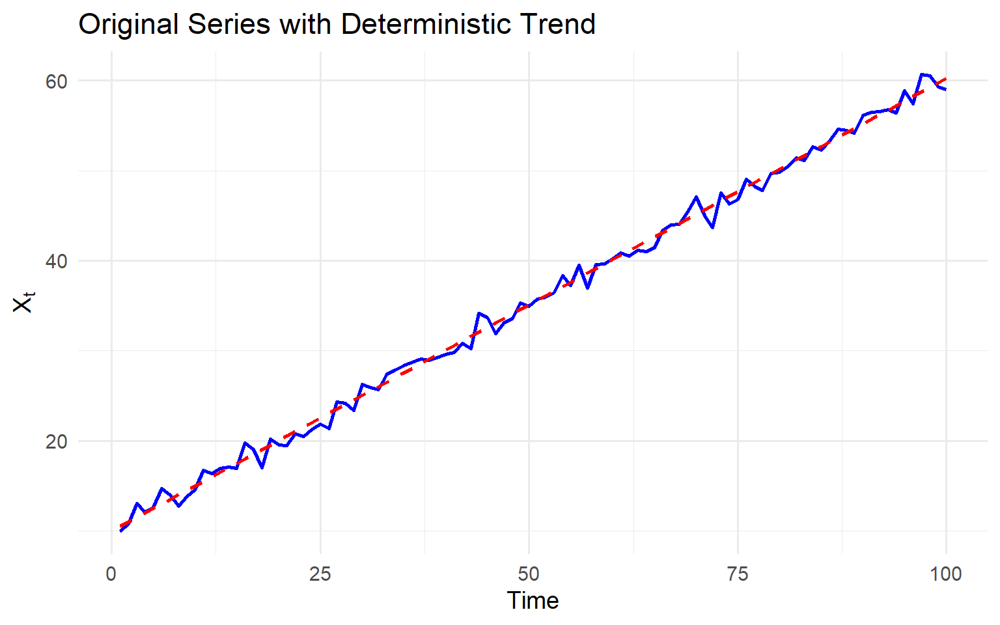
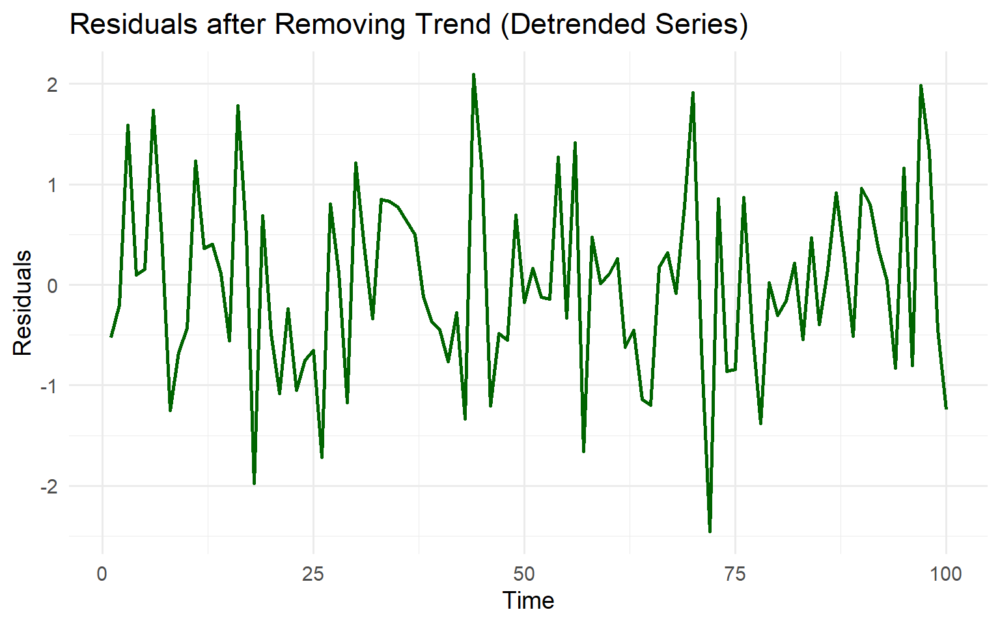
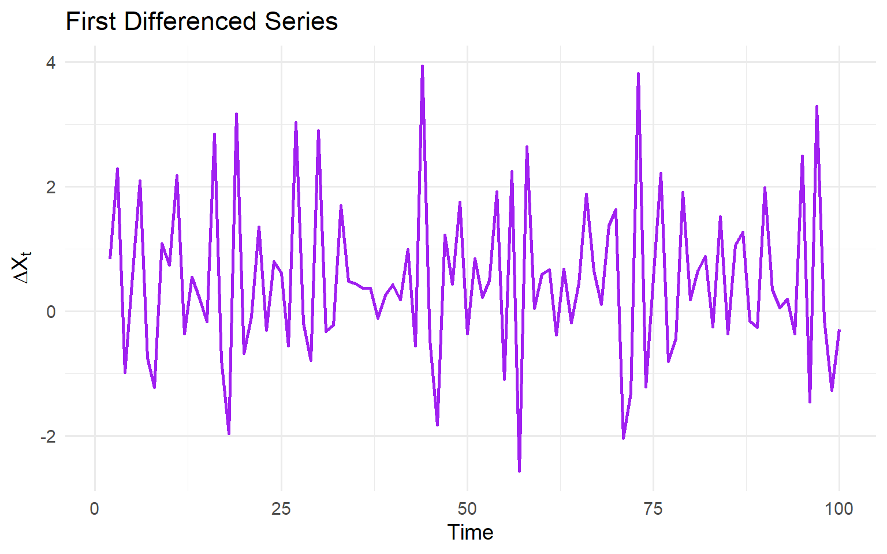
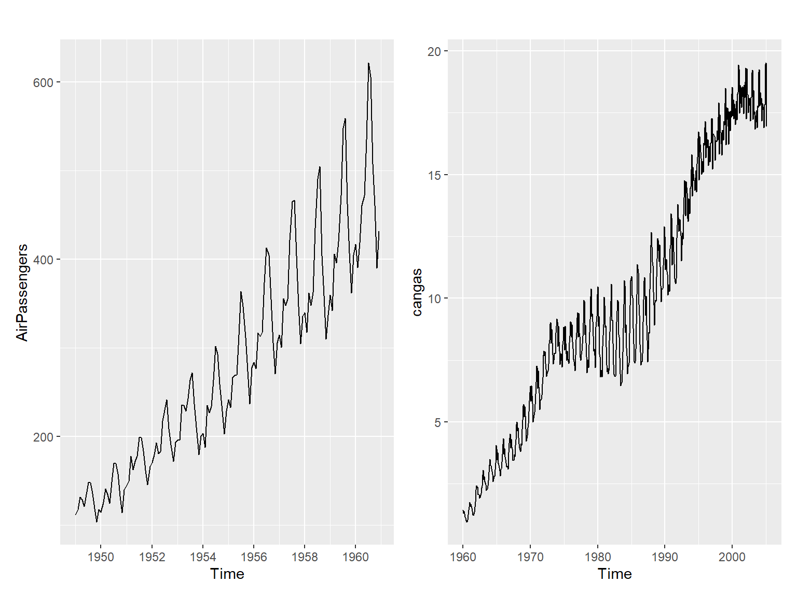
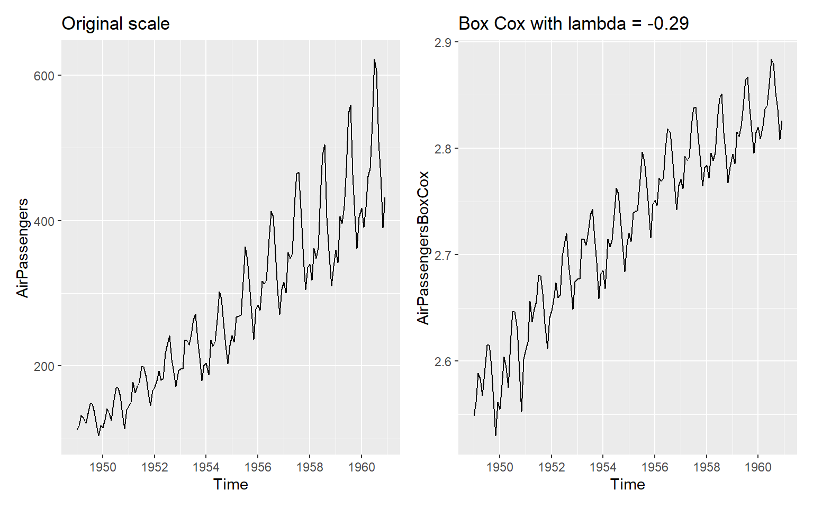

A deterministic trend is a predictable, non-random component such as a straight line or quadratic curve.
Example:
X_t = \alpha + \beta t + \epsilon_t
where \epsilon_t is stationary white noise.
Solution:
Fit and remove the trend (regression detrending), or
Use first differencing (removes linear trend).
After detrending, the residuals should be stationary.
library(ggplot2)set.seed(123)# Parametersn<-100alpha<-10beta<-0.5# Simulate deterministic trend with noiset<-1:nepsilon<-rnorm(n, mean =0, sd =1)X<-alpha+beta*t+epsilondata<-data.frame(t, X)# Fit regression for detrendingfit<-lm(X~t, data =data)data$resid<-residuals(fit)# First differencingdata$diffX<-c(NA, diff(data$X))head(data)
# --- Plot 1: Original series with fitted trend ---p1<-ggplot(data, aes(x =t, y =X))+geom_line(color ="blue", size =1)+geom_smooth(method ="lm", se =FALSE, color ="red", linetype ="dashed")+labs(title ="Original Series with Deterministic Trend", x ="Time", y =expression(X[t]))+theme_minimal(base_size =14)# --- Plot 2: Residuals after regression detrending ---p2<-ggplot(data, aes(x =t, y =resid))+geom_line(color ="darkgreen", size =1)+labs(title ="Residuals after Removing Trend (Detrended Series)", x ="Time", y ="Residuals")+theme_minimal(base_size =14)# --- Plot 3: First differenced series ---p3<-ggplot(data, aes(x =t, y =diffX))+geom_line(color ="purple", size =1)+labs(title ="First Differenced Series", x ="Time", y =expression(Delta*X[t]))+theme_minimal(base_size =14)# Print all plots (Quarto will stack them nicely)p1

p2

p3

2. Stochastic trend
A stochastic trend arises from accumulated random shocks.
Example: Random walk
X_t = X_{t-1} + \epsilon_t
where shocks accumulate over time.
Unlike deterministic trends, stochastic trends are unpredictable and keep evolving.
Apply non-seasonal differencing to remove stochastic trend.
Remedy: First differencing usually removes the unit root, yielding stationarity.
Testing: Augmented Dickey–Fuller (ADF), Phillips–Perron, or KPSS tests.
Key difference:
- Deterministic trend = predictable pattern (e.g., straight line).
- Stochastic trend = unpredictable, driven by random shocks.
Non seasonal first-order differencing:Y'_t=Y_t - Y_{t-1}
Miss one observation
Non seasonal second-order differencing:Y''_t=Y'_t - Y'_{t-1}
Miss two observations
3. Seasonality
Deterministic seasonal pattern → add seasonal dummies or Fourier terms.
For conditional heteroscedasticity → fit GARCH-type models.
What differences do you notice?

Log transformation to stabilize variance
## Original datasetp1<-AirPassengers|>autoplot()+ggtitle("Original scale")## Transformed datasetAirPassengersBoxCox=BoxCox(AirPassengers, lambda ="auto")p2<-AirPassengersBoxCox|>autoplot()+ggtitle(paste0("Box Cox with lambda = ", round(attributes(AirPassengersBoxCox)$lambda,2)))p1|p2

5.2 Choosing the Order of Differencing
Avoid over-differencing (adds unnecessary MA terms and inflates variance).
Visual inspection:
Random walk–like series → first differencing.
Strong seasonal cycle → seasonal differencing.
Statistical tests (ADF, KPSS) can guide the choice.
5.3 Models after Differencing
Once stationarity is achieved, ARMA models can be fitted.
General class:
ARIMA(p,d,q)
Seasonal ARIMA (p,d,q)(P,D,Q))_m
Sometimes include drift to capture mean shifts.
5.4 Seasonal components
The seasonal part of an AR or MA model will be seen in the seasonal lags of the PACF and ACF.
ARIMA(0,0,0)(0,0,1)12 will show
a spike at lag 12 in the ACF but no other significant spikes.
The PACF will show exponential decay in the seasonal lags 12, 24, 36, . . . .
ARIMA(0,0,0)(1,0,0)12 will show
exponential decay in the seasonal lags of the ACF.
a single significant spike at lag 12 in the PACF.
Practical Examples
Simulated series with linear trend → stationary after first differencing.
Monthly series with annual seasonality → stationary after seasonal differencing (s=12).
Log-transformed economic series → removes variance growth, then differencing achieves stationarity.
5.5 Modelling steps
Plot the data.
Split time series into training, validation (optional), test.
If necessary, transform the data (using a Box-Cox transformation) to stabilise the variance.
If the data are non-stationary, take first differences of the data until the data are stationary.
Examine the ACF/PACF to identify a suitable model.
Try your chosen model(s), and to search for a better model.
Check the residuals from your chosen model by plotting the ACF of the residuals, and doing a portmanteau test of the residuals. If they do not look like white noise, try a modified model.
Once the residuals look like white noise, calculate forecasts.
5.6 Example: Model Fitting
Step 1: Plot data
Detect unusual observations in the data
Detect non-stationarity by visual inspections of plots
Stationary series:
has a constant mean value and fluctuates around the mean.
constant variance.
no pattern predictable in the long-term.
Step 2: Split time series into training and test sets
#######################
# KPSS Unit Root Test #
#######################
Test is of type: mu with 3 lags.
Value of test-statistic is: 0.0942
Critical value for a significance level of:
10pct 5pct 2.5pct 1pct
critical values 0.347 0.463 0.574 0.739
#######################
# KPSS Unit Root Test #
#######################
Test is of type: mu with 4 lags.
Value of test-statistic is: 2.113
Critical value for a significance level of:
10pct 5pct 2.5pct 1pct
critical values 0.347 0.463 0.574 0.739
#######################
# KPSS Unit Root Test #
#######################
Test is of type: mu with 3 lags.
Value of test-statistic is: 0.1264
Critical value for a significance level of:
10pct 5pct 2.5pct 1pct
critical values 0.347 0.463 0.574 0.739
Step 5: Examine the ACF/PACF to identify a suitable model
d=1 and D=1 (from step 3)
Significant spike at lag 1 in ACF suggests non-seasonal MA(1) component.
Significant spike at lag 12 in ACF suggests seasonal MA(1) component.
By analogous logic applied to the PACF, we could also have started with ARIMA(1,1,0)(1,1,0)_{12}.
Let’s try both
Initial model:
ARIMA(0,1,1)(0,1,1)_{12}
ARIMA(1,1,0)(1,1,0)_{12}
Try some variations of the initial model:
ARIMA(0,1,1)(1,1,1)_{12}
ARIMA(1,1,1)(1,1,0)_{12}
ARIMA(1,1,1)(1,1,1)_{12}
Both the ACF and PACF show significant spikes at lag 3, and almost significant spikes at lag 3, indicating that some additional non-seasonal terms need to be included in the model.
ARIMA(3,1,1)(1,1,1)_{12}
ARIMA(1,1,3)(1,1,1)_{12}
ARIMA(3,1,3)(1,1,1)_{12}
AICc
Initial model: AICc
ARIMA(0,1,1)(0,1,1)_{12}: -344.33 (the smallest AICc)